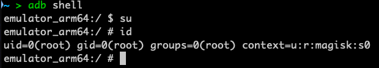

This guide will enable you to unpin android applications, and forward traffic to a local proxy (i.e. Burp/Caido/Zap) running on port :8080 on your local machine.
References:
https://gist.github.com/teknogeek/4dc35fb3801bd7f13e5f0da5b784c725
https://gitlab.com/newbit/rootAVD
https://github.com/frida/frida/releases
Prerequisites
-
You should be running an emulated device with Play Store enabled.
-
You have a rooted device and adb working. If you do not already, follow instructions on https://gitlab.com/newbit/rootAVD
Modern versions of android require you to use the “FAKEBOOTIMG” option with rootAVD. More info can be found at the link above. You may need to do a clean boot during the setup like so: emulator @device_name -no-snapshot-load
To confirm your device is rooted properly:
adb rootshould fail, indicating you’re running a production build:

- Connect to your emulator:
adb shell
- Now that you’re connected to your device, execute these commands:
su
id
- Confirm that you see a #, and you are root:

Frida Setup
Frida runs as client/server. The server runs on your android emulator, and the client runs on the PC with adb.
Client setup
Requires python3 installed:
pip3 install frida-tools
Android setup
- Download the latest frida server from: https://github.com/frida/frida/releases
frida-server-XX-android-arm64.xz
frida-server needs to match your Android virtualized hardware, usually arm64. This can be checked with adb shell getprop ro.product.cpu.abi
- Unpack the .xz archive.
- Move the unpacked frida-server to your android device:
adb push frida-server-XX-android-arm64 /data/local/tmp/frida-server
- Make frida-server executable:
adb shell chmod 755 /data/local/tmp/frida-server
Setup forwarding to your web proxy
From the android device:
Go to Settings -> Network and Internet -> Wi-Fi -> AndroidWifi -> Edit (Pen icon)
Proxy hostname: 127.0.0.1
Proxy port: 8080
If you see a notification about the Wifi not having connection, choose ‘use anyways’.
Disabling LTE on the emulator will stop the traffic from going through an alternate interface. This doesn’t always matter, but can help make it more reliable.
Using Frida
- Connect to your Android device as root:
adb shell
su
- Find the name of your application:
pm list packages|grep APPNAME

Here, the app name is ‘com.ringapp’
- Start the daemon:
/data/local/tmp/frida-server -D
Hooking the app
-
Download the universal unpinning script from teknogeek: https://gist.github.com/teknogeek/4dc35fb3801bd7f13e5f0da5b784c725
-
Hook the local tcp:8080 to your machines’ tcp:8080:
adb reverse tcp:8080 tcp:8080
This has to be run every time you restart the emulator
- Run the frida unpinning script:
frida -U -l ./universalUnpin.js -f com.<appname>
You should now see traffic flowing through your web proxy!
Quickstart after reboot
- Start your emulator:
emulator @rooted
Ensure Wifi is on and used as the main network
- Forward the android port to your local system, and start the Frida daemon:
adb reverse tcp:8080 tcp:8080 && adb shell su -c /data/local/tmp/frida-server -D
The daemon will hang your terminal. You can either close the terminal, or open a second to run the next command.
- Launch the app with the unpinning script:
frida -U -l /Users/laptop/Documents/android/universalUnpin.js -f com.<appname>